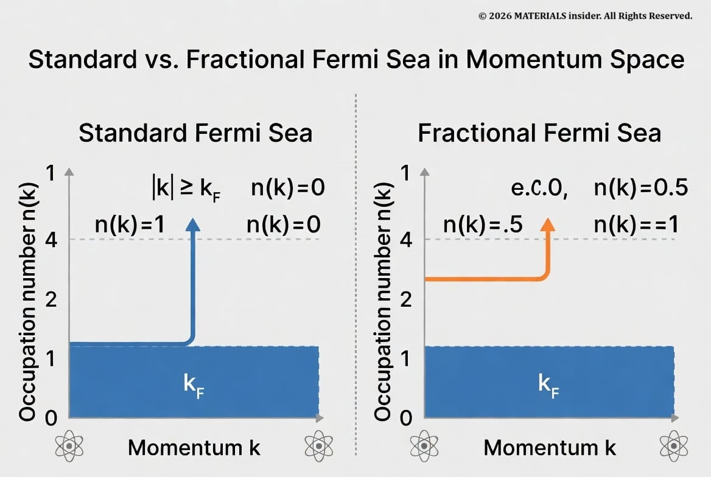
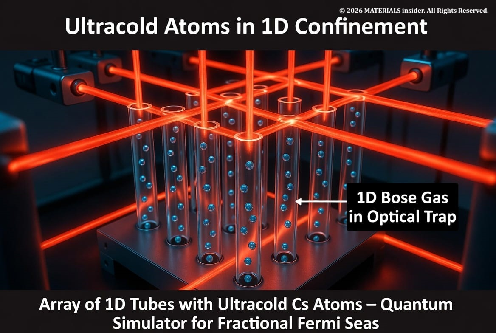
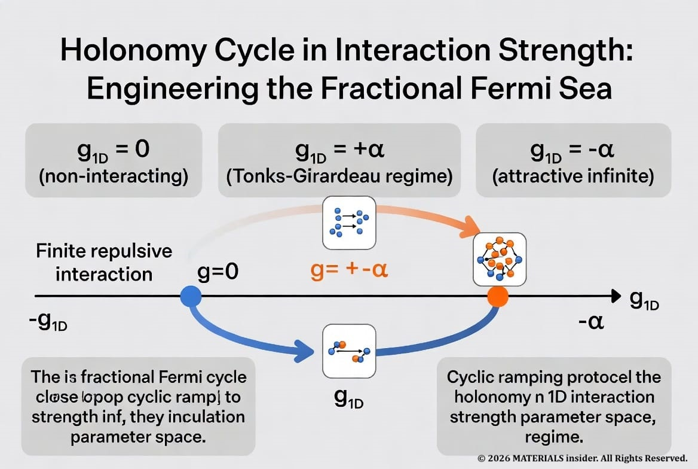

Fractional Fermi Seas at the Atomic Scale: Physicists Engineer a Strange New Quantum State
Researchers have created an entirely new type of quantum matter called a fractional Fermi sea using ultracold cesium atoms confined to one dimension in June 2026.
In a landmark achievement reported in June 2026, researchers have created an entirely new type of quantum matter called a fractional Fermi sea using ultracold cesium atoms confined to one dimension. This highly excited yet remarkably ordered nonequilibrium state features particles that appear to obey a “reduced occupancy rule” in momentum space — something never before realized in the lab.
The work, led by the Nägerl group at the University of Innsbruck in collaboration with theorist Alvise Bastianello, opens fresh pathways in quantum simulation, exotic statistics, and potentially quantum technologies. For materials scientists and quantum technologists, it represents a powerful new tool for engineering quantum states at the atomic scale that go far beyond equilibrium paradigms.

What Is a Fermi Sea — and Why “Fractional”?
In ordinary quantum mechanics, fermions (like electrons) obey the *Pauli exclusion principle: no two can occupy the same quantum state. At low temperatures, they fill the lowest available energy states up to a sharp cutoff called the **Fermi energy*, forming a “Fermi sea” in momentum space. The occupation number jumps from 1 (filled) to 0 (empty) at the Fermi momentum kF.
Bosons, by contrast, can all pile into the ground state (Bose-Einstein condensation). But what if particles could occupy momentum states with fractional probabilities — say ½ or ¼ — uniformly across a range of momenta?
This is exactly what fractional Fermi seas (FFS) are. Predicted theoretically through extensions of Pauli statistics (notably Haldane’s generalized exclusion statistics), an FFS features a momentum distribution with uniform but fractional occupancy. Instead of a full step of height 1, you get a shorter step — particles behaving as if they partially “share” states in a new, exotic way.
Until now, these states existed only in theory. The Innsbruck team has now brought them into the laboratory.
How They Did It: Atomic-Scale Engineering with Light and Interaction Cycles:
The platform is a quantum simulator made of ultracold cesium atoms trapped in an array of one-dimensional tubes. A 2D optical lattice — created by intersecting laser beams — slices the atoms into thousands of independent 1D quantum wires.

In these 1D tubes, the atoms behave as a Bose gas whose interactions can be precisely tuned using a magnetic Feshbach resonance. The key innovation is not cooling further or adding disorder, but repeatedly cycling the interaction strength g1D through extreme regimes:
- From finite repulsive interactions
- Through the infinite-repulsion Tonks-Girardeau regime (g1D → +∞)
- Into the attractive regime
- Through infinite attraction (g1D → -∞)
- Back through the non-interacting point (g1D = 0)
These closed “holonomy cycles” in parameter space act like a quantum pump. Each cycle reorganizes the many-body state without simply heating the gas. After several cycles, the system settles into a long-lived excited state whose momentum distribution matches the predicted fractional Fermi sea.

Theory Behind the Magic: Generalized Hydrodynamics and Hidden Order:
The experiments are guided by generalized hydrodynamics (GHD), a powerful framework for nearly integrable 1D quantum systems. The cyclic driving induces a topological-like effect in the space of interaction strengths, resulting in the fractional filling of momentum states.
Crucially, the resulting state is not a conventional Tomonaga-Luttinger liquid (the standard description of 1D quantum matter). It exhibits Friedel oscillations — characteristic ripples in the density or correlation functions with wavevector 2kF — that serve as smoking-gun evidence of an underlying Fermi surface, even though the particles are bosons in a highly excited state.
The state carries “hidden order” visible only in correlations, not in simple density profiles. Researchers have even playfully suggested the quasiparticles might deserve a new name, such as “super-Fermions.”
Why This Matters: Applications and Broader Impact:
This discovery is more than a curiosity. It demonstrates that cold-atom quantum simulators can now access entirely new classes of quantum critical phases that do not exist in equilibrium. Potential implications include:
- Quantum thermodynamics out of equilibrium — understanding how exotic statistics affect energy flow and irreversibility.
- Strong>Quantum information and sensing — states with protected correlations or fractional statistics could inspire new qubit encodings or ultra-sensitive detectors.
Materials science inspiration — analogous physics may appear in solid-state systems (certain quantum wires, fractional quantum Hall edges, or engineered moiré materials) once we learn how to stabilize similar states. - Fundamental physics — a new window into generalized exclusion statistics and the limits of conventional many-body theory.
Because the states are stable enough to measure yet far from equilibrium, they offer a controlled playground for exploring physics “beyond the usual equilibrium paradigms,” as lead author Yi Zeng noted.
Credits and Context:
This breakthrough rests on two closely related 2026 works:
- Bastianello et al., “Exotic critical states as fractional Fermi seas in the one-dimensional Bose gas,” Physical Review Letters 136, 230402 (2026). DOI: [10.1103/j3s5-gjpf] (https://doi.org/10.1103/j3s5-gjpf)
- Strong>Zeng et al., “Realization of fractional Fermi seas,” arXiv:2602.17657 (submitted Feb 2026, revised May 2026)
Key contributors:
- Experimental team (University of Innsbruck): Yi Zeng, Sudipta Dhar, Zekui Wang, Xudong Yu, Milena Horvath, Yanliang Guo, Hanns-Christoph Nägerl, Manuele Landini
- Theory lead: Alvise Bastianello (CNRS & Université Paris-Dauphine), with Grigori E. Astrakharchik
The research builds on decades of progress in ultracold atoms, integrable systems, and generalized hydrodynamics, now pushed into genuinely new territory.
The Bottom Line
By cycling interactions in a precisely engineered 1D atomic gas, physicists have created a fractional Fermi sea — a quantum state with fractional momentum occupancies and hidden order that defies conventional classification. It is a striking example of atomic-scale quantum engineering and a reminder that the universe still holds surprises when we drive quantum matter far from equilibrium.
For anyone working in quantum materials, atomic physics, or quantum simulation, this is a development worth watching closely. The fractional Fermi sea may be the first of many new states we can now deliberately design at the atomic scale.
Further reading
- EOriginal PRL paper and arXiv preprint (linked above)
- University of Innsbruck press release (June 2026)
- Phys.org coverage of the discovery
This article was written for MATERIALSinsider based on validated peer-reviewed sources and recent experimental reports from June 2026. All technical details have been cross-checked against the primary publications.
Share this article: